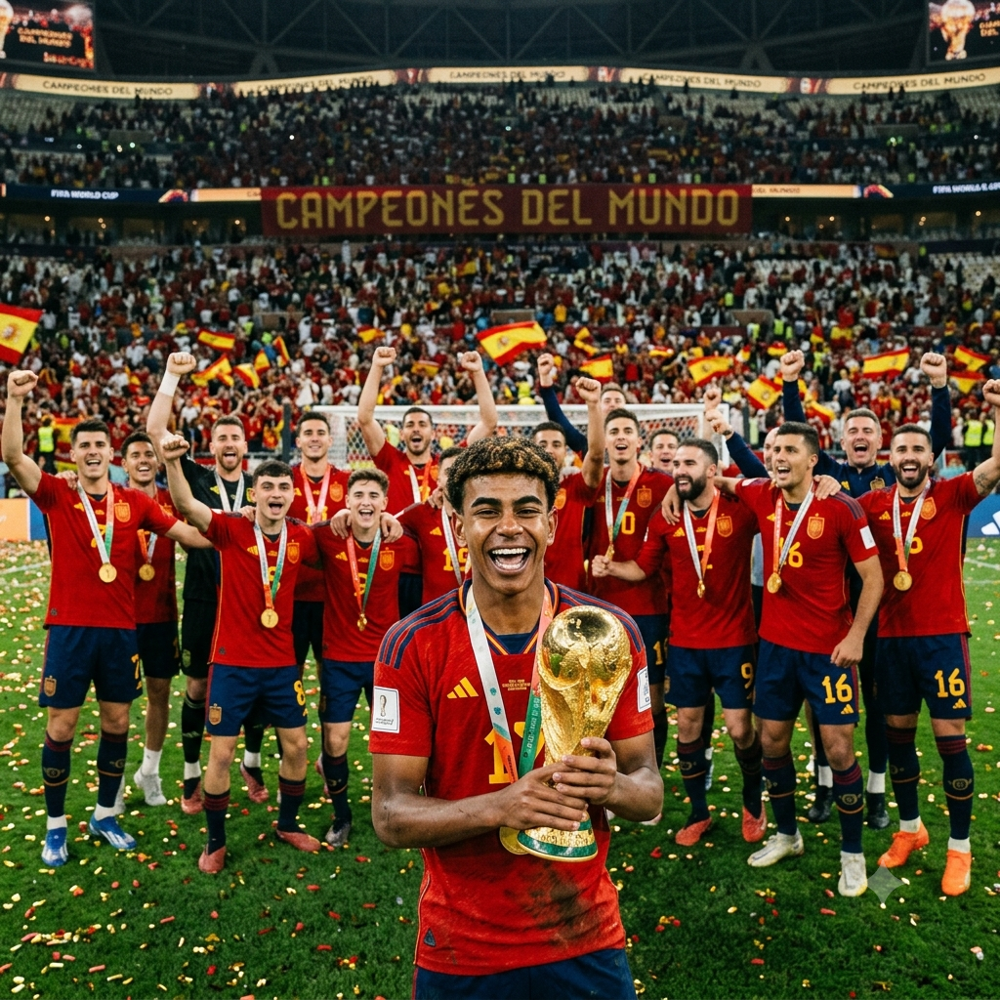

MEU PRIMEIRO POST
Por: Rafaela Morais
Boas-vindas ao meu novo blog! Aqui eu irei compartilhar notícias sobre a Copa do Mundo.
Aqui vou compartilhar as notícias sobre a copa.

Por: Rafaela Morais
Boas-vindas ao meu novo blog! Aqui eu irei compartilhar notícias sobre a Copa do Mundo.
Por: Rafaela Morais
Curiosidades da copa:o estádio que eles venceram de 1x0 pra Argentina foi o MetLife Stadium, E sobre o time ele contém 11 jogadores em campo mas o mais "famosinho" do time é o Lamine Yamal, E sobre o troféu ele foi feito com ouro 18 quilates e duas camadas da pedra semi-preciosa malaquita na base verde, e o peso dele é de 6,175 kg,e a altura é de 36,8 cm,e ele foi desenhado pelo escultor italiano Silvio Gazzaniga em 1971, e se retrata duas figuras humanas segurando o planeta Terra./p>